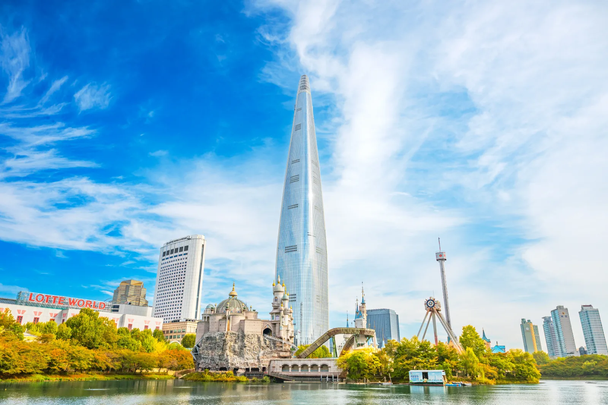
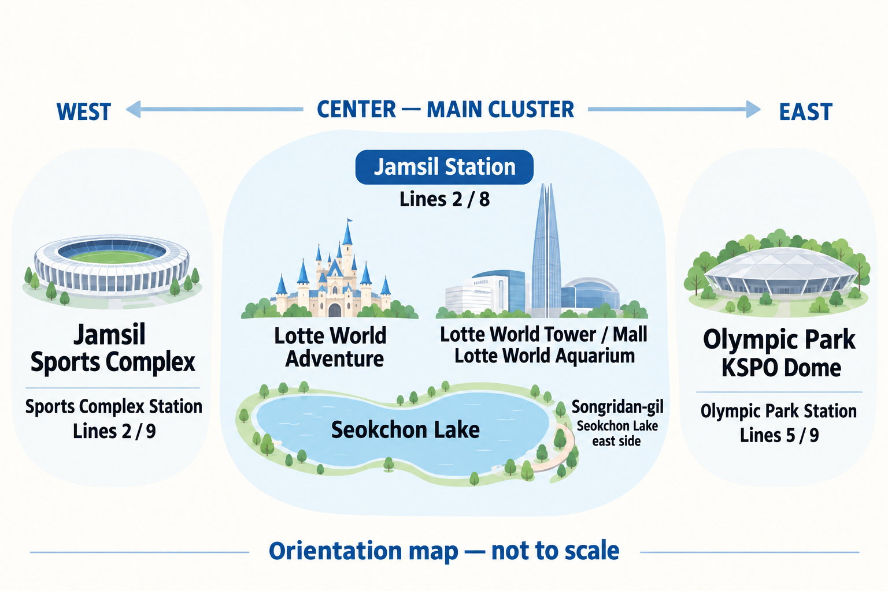
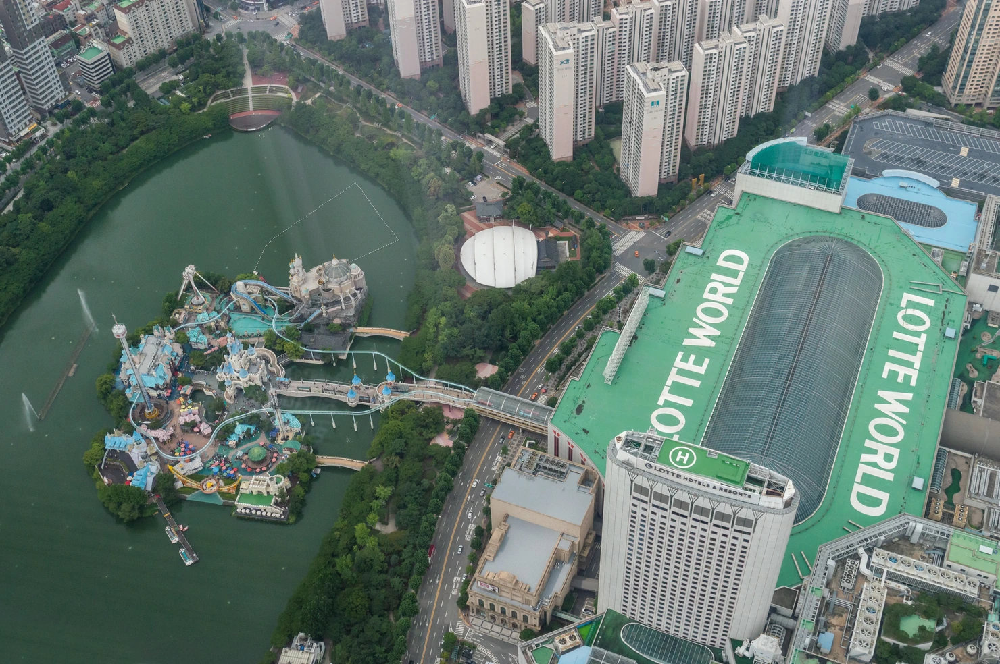
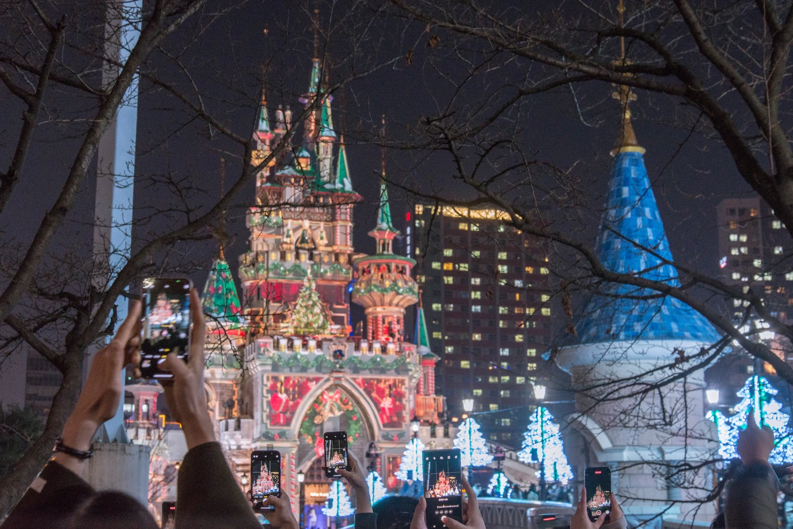
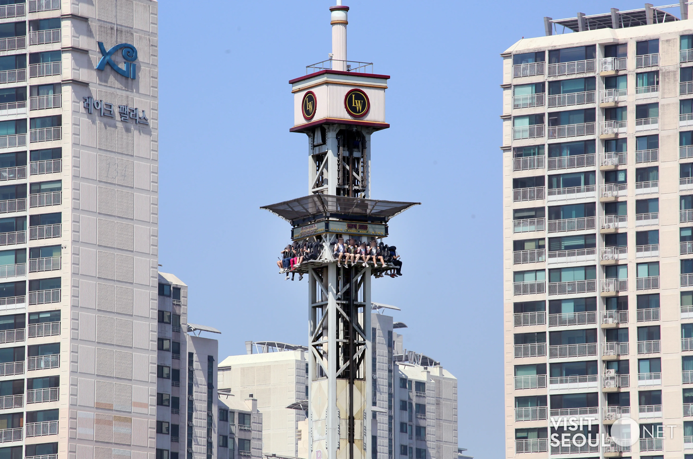
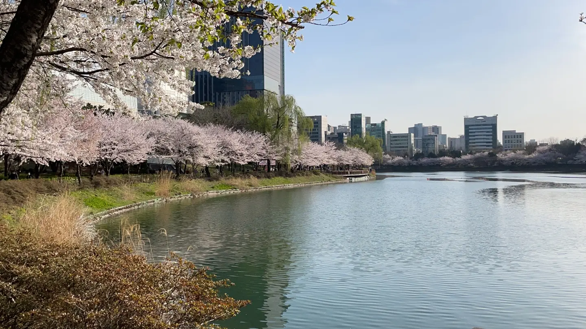
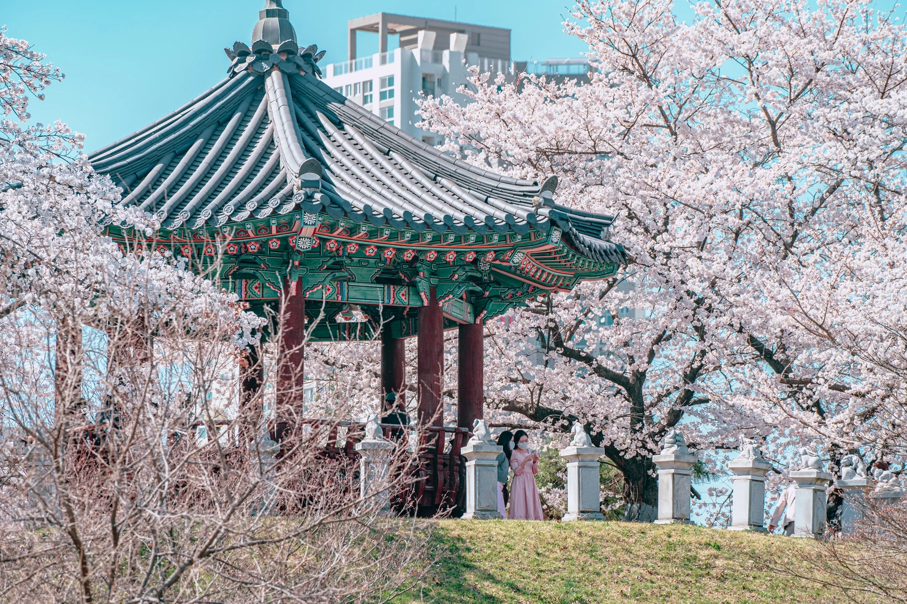
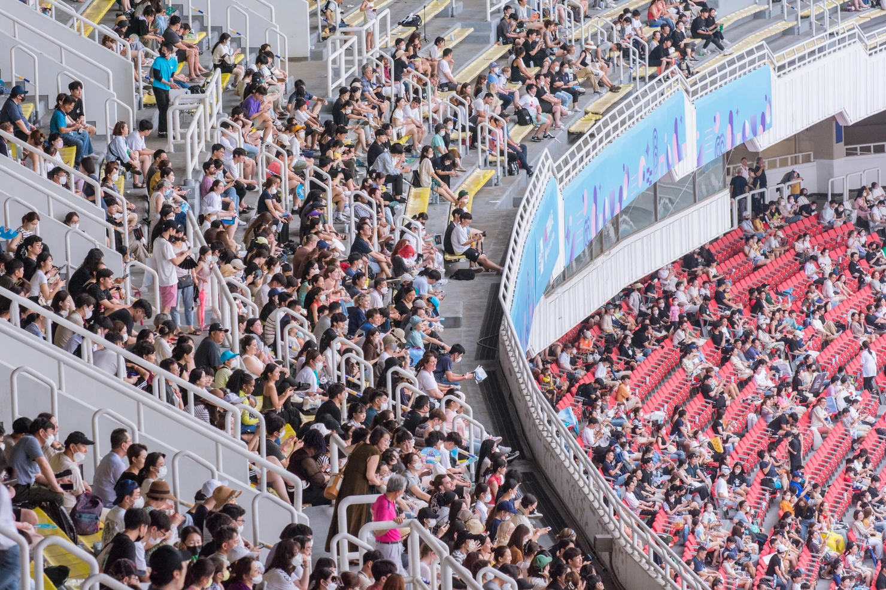

Guide de Jamsil 2026
Jamsil devient déroutant si vous considérez tout ce qui porte le nom « Lotte » comme une seule attraction.

Pour la plupart des voyageurs, une question plus simple permet de s’y retrouver : Venez-vous pour Lotte World, pour la tour et le lac, ou pour un match ou un concert ?
Ce sont trois journées différentes. Essayer de tout réunir conduit généralement à passer plus de temps à marcher, à attendre et à traverser Songpa qu’à profiter des lieux.
Choisissez d’abord votre journée à Jamsil
Avant de venir à Jamsil, une longue liste d’attractions n’est pas nécessaire. Décidez plutôt de ce qui sera au cœur de la journée.
Si vous venez pour Lotte World
Consacrez l’essentiel de la journée au parc.
L’erreur consiste à prévoir Lotte World comme une simple étape entre l’aquarium, Seoul Sky et le parc olympique. Avec les files d’attente, les repas et la fatigue, ce programme devient vite intenable.
S’il vous reste de l’énergie après le parc, une promenade au lac Seokchon ou un dîner dans le centre commercial permet de terminer plus facilement la journée.
Si le parc d’attractions ne vous attire pas
Jamsil garde son intérêt.
Commencez par la tour ou l’aquarium, sortez ensuite au lac Seokchon, puis rejoignez Songridan-gil lorsque vous aurez envie de manger ou de vous poser dans un endroit moins vaste que le centre commercial.
Par temps clair, Seoul Sky peut devenir la dernière étape plutôt que la première.
Si vous venez pour le baseball ou un concert
Organisez la journée autour de l’événement.
Un concert au KSPO Dome vous mène du côté du parc olympique, tandis qu’un match de baseball se déroule du côté du complexe sportif. Aucun des deux ne se prête à un simple détour depuis l’ensemble Lotte World.
Terminez vos visites assez tôt pour éviter de devoir gérer en même temps l’entrée du lieu, le dîner et le dernier métro.
Se repérer à Jamsil
Sur une carte, Jamsil peut sembler être un quartier de loisirs compact. Il est plus facile de le comprendre comme un pôle principal et deux secteurs distincts.
Le pôle principal entoure la station Jamsil : Lotte World Adventure, Lotte World Tower, le centre commercial, l’aquarium et le lac Seokchon. Au-delà du lac, Songridan-gil offre des cafés et des restaurants pour sortir de cet ensemble.
À l’est se trouvent le parc olympique et le KSPO Dome. À l’ouest, le complexe sportif de Jamsil.

Vous pouvez relier ces secteurs, sans pour autant devoir tous les inclure dans la même journée.
Le lac Seokchon n’est pas un petit bassin entre deux attractions. Le parcours officiel autour des lacs Est et Ouest mesure environ 2,5 km, ce qui fait de la boucle complète une véritable étape du programme, surtout avec des enfants ou après plusieurs heures à Lotte World.

Partez de la station Jamsil, en sachant de quel côté sortir
La station Jamsil est pratique, mais elle ne débouche pas sur une entrée unique.
Pour Lotte World Tower, le centre commercial ou l’aquarium, vous vous dirigez vers un autre côté de l’ensemble que pour Lotte World Adventure.
La distinction compte davantage avec une poussette, des enfants, ou si vous voulez simplement éviter de passer les 20 premières minutes sous terre à suivre les mauvais panneaux.
Pour le côté de la tour, retenez la sortie 2. Pour Adventure, suivez les indications Lotte World vers la sortie 4. Une fois à l’intérieur, les panneaux sont plus utiles qu’un plan des rues pour vous orienter.
Ne prenez pas non plus la station Jamsil comme point de départ pour tous les événements de Songpa. Pour le KSPO Dome, la station Olympic Park est plus pertinente : les consignes officielles indiquent les lignes 5 et 9 et la sortie 3.
Itinéraire 1 — Consacrer la journée à Lotte World
Si Lotte World est l’une des principales raisons de votre venue à Séoul, ne le prévoyez pas comme une étape de deux heures.
Vous pouvez y passer une journée entière sans voir le temps passer.
Les files d’attente y contribuent, mais aussi les repas, la recherche de l’attraction suivante, les déplacements entre Adventure en intérieur et Magic Island en extérieur, et les pauses dont chacun peut avoir besoin.
Avant d’entrer, décidez plutôt de ce qui fera pour vous une journée réussie.
Pour l’un, ce sera peut-être trois grandes attractions.
Pour une famille, ce sera un mélange de manèges, de parade, d’activités en intérieur et de pauses suffisantes pour que personne ne soit épuisé au milieu de l’après-midi.
Commencez par ces priorités.
Le reste viendra en plus.
Arrivez plus tôt si le parc est votre priorité
Une arrivée le matin en semaine vous laisse plus de marge pour adapter le programme qu’une arrivée après le déjeuner avec l’impression de devoir rattraper le temps perdu.
C’est encore plus vrai avec des enfants.
Si les premières heures se passent bien, vous pourrez ralentir ensuite.
Si le parc est déjà bondé, vous le saurez au moins avant de consacrer la moitié de la journée à des attractions secondaires pour vous.
La billetterie actuelle propose aussi une formule After4, qui correspond à un autre type de visite. Si vous venez à Jamsil pour Lotte World, prévoyez une entrée à la journée plutôt que de compter sur un billet de fin d’après-midi pour vivre la même expérience.
N’ajoutez pas systématiquement le parc olympique ensuite
C’est l’un des moyens les plus simples de concevoir un itinéraire qui paraît efficace sur la carte, mais s’avère pénible sur place.
Après une journée entière dans le parc, une courte promenade au lac Seokchon ou un dîner à proximité s’intègre facilement.
Traverser Songpa pour ajouter le parc olympique, un autre grand site ou un concert est une tout autre décision.
Si Lotte World a occupé la journée, laissez-le en être l’aboutissement.

Les files d’attente changent la journée
Pour préparer Lotte World, la question essentielle n’est pas le nombre de manèges.
C’est le temps d’attente que vous êtes prêt à accepter.
Les témoignages récents de voyageurs évoquent régulièrement de longues attentes aux attractions populaires, même en semaine. Ils expliquent aussi l’intérêt pour Magic Pass : quelques longues files suffisent à bouleverser le programme, sans que cela signifie que chaque visiteur ait besoin d’en acheter un.
Choisissez vos priorités avant de consulter les temps d’attente
N’arrivez pas avec une liste de quinze attractions « incontournables ».
Retenez celles que vous seriez vraiment déçu de manquer.
Si l’attente reste raisonnable, faites-les.
Si l’une d’elles risque déjà d’occuper une grande partie de la journée, décidez avant de rejoindre la file si elle mérite ce temps.
Cela paraît évident, jusqu’au moment où vous vous dites : « Nous avons fait tout ce chemin. »
C’est précisément là qu’une file de 90 minutes commence à dicter votre programme.

Magic Pass peut aider, mais ne remplace pas le billet d’entrée
Le Magic Pass actuel est une option payante distincte. Vous devez aussi avoir un billet d’entrée au parc.
Il donne accès à une file réservée pour les attractions éligibles, sans supprimer toute attente ni couvrir toutes les attractions. Les quantités sont limitées. Lotte World le vend actuellement dans son application et prévient qu’il peut être épuisé rapidement.
La bonne question n’est donc pas :
« Tout le monde devrait-il acheter Magic Pass ? »
Demandez-vous plutôt :
« Payer ce supplément nous permettrait-il de préserver ce qui compte vraiment pour nous aujourd’hui ? »
Si votre groupe vise surtout quelques attractions populaires et que le parc est bondé, la réponse peut être oui.
Avec un jeune enfant, si vous avancez tranquillement en alternant manèges, activités en intérieur, repas et pauses, ce supplément peut vous apporter moins que prévu.
Réserver Lotte World
Si Lotte World est au cœur de votre journée, consultez les billets d’entrée classiques avant de venir.
Si l’accès prioritaire compte pour vous, examinez séparément les conditions actuelles de Magic Pass avant de payer. Le supplément n’a d’intérêt que si les attractions que vous visez le justifient.
En famille, pensez aussi à la fatigue et à la stimulation, pas seulement aux tailles minimales
Lotte World peut être très pratique en famille, car de nombreuses activités sont réunies au même endroit.
Cela ne rend pas automatiquement la journée facile.
Le parc intérieur peut être bruyant et bondé. Il s’étend sur plusieurs niveaux. Les jeunes enfants peuvent se fatiguer bien avant que les adultes aient terminé leur liste de manèges.
Si un adulte cherche sans cesse l’attraction suivante alors que l’enfant a besoin de manger, d’aller aux toilettes ou de trouver du calme, le programme est déjà trop ambitieux.
Avec de jeunes enfants, une journée réussie peut tout simplement comporter moins de manèges et moins de déplacements.
Cela reste une journée entière à Lotte World.
Itinéraire 2 — Jamsil sans le parc d’attractions
Il n’est pas nécessaire d’aimer les parcs d’attractions pour passer une bonne demi-journée ou une journée à Jamsil.
L’option la plus simple consiste à rester du côté de la tour et du lac :
Tour ou aquarium → lac Seokchon → Songridan-gil → Seoul Sky si la météo le justifie.
Cet ordre vous laisse adapter la journée, sans vous enfermer dans un programme avant de connaître la météo ou votre niveau d’énergie.
Commencez en intérieur si la météo est défavorable
Par temps pluvieux, très chaud ou glacial, l’aquarium et Lotte World Mall offrent un point de départ facile à l’abri.
Vous n’êtes pas obligé pour autant de rester toute la journée dans cet ensemble.
Si le temps s’améliore, le lac Seokchon est tout proche. Sinon, vous pouvez rester principalement en intérieur sans vous imposer un parcours extérieur désagréable.
C’est l’un des atouts de Jamsil pour les familles et les groupes d’âges variés : vous disposez de solutions de repli lorsque le programme initial devient inconfortable.
Une option simple en intérieur
Si la pluie, la chaleur ou le froid vous poussent à rester à l’abri, l’aquarium s’intègre plus facilement au reste de Jamsil qu’une journée entière de parc d’attractions.
Choisissez-le surtout si l’aquarium vous intéresse en lui-même, pas simplement parce qu’une autre attraction Lotte se trouve à côté.
Ne figez pas trop tôt la visite de Seoul Sky
À Jamsil, Seoul Sky est l’une des visites les plus faciles à garder sous réserve.
Par temps clair, la vue peut justifier d’attendre la fin d’après-midi ou le coucher du soleil.
Par temps brumeux ou pluvieux, monter uniquement parce que c’était prévu n’est pas forcément le meilleur usage de votre temps.
Regardez le ciel avant de décider.
La tour sera toujours là.
Cette souplesse est plus utile que de vouloir cocher toutes les grandes attractions de Jamsil.
Décidez en fonction du ciel
Si la visibilité semble bonne et que la vue vous tente toujours, consultez alors le billet Seoul Sky proposé.
Si les immeubles disparaissent dans la brume ou la pluie, renoncez sans chercher à sauver le programme initial.
Le lac Seokchon mérite une promenade, pas seulement une photo
Depuis l’ensemble Lotte, le lac paraît compact.
En faire le tour donne une autre impression.
Les lacs Est et Ouest forment ensemble un parcours d’environ 2,5 km, et une boucle complète à un rythme tranquille peut prendre autour d’une heure, sans compter les arrêts.
Vous n’êtes pas obligé de tout parcourir.
Après Lotte World, les enfants n’auront peut-être plus envie de marcher.
Après l’aquarium, vous voudrez peut-être seulement prendre l’air au bord du lac et voir la tour sous un autre angle.
Cela suffit très bien.
Le lac apporte davantage lorsqu’il permet de souffler que lorsqu’il devient une tâche de plus à accomplir.
Choisissez le côté adapté à la suite
Si vous comptez ensuite dîner ou aller au café, dirigez-vous plutôt vers le lac Est et Songridan-gil au lieu de terminer la boucle uniquement pour pouvoir dire que vous l’avez faite.
Si vous sortez fatigué de Lotte World Adventure, une courte promenade le long du lac Ouest peut déjà suffire.
C’est le moment de garder votre programme souple.
La distance parcourue compte moins que ce que vous ferez ensuite.

Rejoignez Songridan-gil lorsque vous avez envie de quitter l’univers Lotte
Le centre commercial est pratique.
Parfois, c’est exactement ce qu’il vous faut.
Mais après plusieurs heures dans les installations Lotte, marcher vers Songridan-gil permet de retrouver une autre échelle.
Ce secteur, au-delà du lac Seokchon, propose des restaurants et des cafés plus petits plutôt qu’un nouvel étage de grand complexe.
Inutile de partir à la recherche d’un café célèbre en particulier.
Venez-y parce que vous avez envie de vous asseoir, de manger ou de ralentir après les grandes attractions.
C’est une raison suffisante pour traverser jusque-là.
Centre commercial ou Songridan-gil ?
Choisissez le centre commercial si :
- quelqu’un est fatigué
- il fait mauvais
- les enfants ont besoin d’un repas simple à trouver
- vous n’avez pas envie de marcher davantage
- la facilité compte plus que l’ambiance
Dirigez-vous vers Songridan-gil si :
- vous voulez sortir du complexe
- le groupe a encore de l’énergie
- le dîner ou la pause-café fait partie de la sortie
- vous voulez changer d’ambiance pour la deuxième partie de votre visite à Jamsil
Aucun des deux choix n’est « meilleur » en soi.
Ils répondent à des besoins différents selon le moment de la journée.
Adaptez le programme à la météo
Jamsil se prête particulièrement bien aux changements de programme : plusieurs grandes activités sont proches les unes des autres, tout en dépendant très différemment de la météo.
Jour de pluie :
Aquarium → centre commercial → repas en intérieur. Ajoutez le lac seulement si la pluie vous laisse un répit.
Temps clair :
Aquarium ou centre commercial → lac → Songridan-gil → Seoul Sky plus tard.
Après-midi d’été très chaude :
Restez à l’intérieur aux heures les plus chaudes et rejoignez le lac en fin de journée.
Temps brumeux :
Ne faites pas dépendre tout le programme de l’observatoire. Gardez Seoul Sky en option et restez au niveau du sol si la vue ne mérite pas la montée.
Les informations d’exploitation de Seoul Sky peuvent varier selon la date, notamment l’heure limite d’entrée avant la fermeture. Consultez les horaires à jour avant de venir plutôt que de vous fier à une heure fixe publiée dans un guide.
Parc olympique, baseball ou concert
Un match ou un concert change la façon d’organiser votre journée à Jamsil.
Ne commencez pas par une liste d’attractions. Partez du lieu de l’événement et l’heure à laquelle vous devez y être.
Le KSPO Dome se trouve dans le parc olympique, pas à côté de Lotte World. Le complexe sportif de Jamsil est de l’autre côté du quartier. Tous deux appartiennent au secteur élargi de Jamsil/Songpa, sans être des destinations interchangeables.
Cette distinction compte surtout lorsque des milliers de personnes arrivent ou repartent en même temps.
Pour le KSPO Dome, retenez la station Olympic Park
Pour le KSPO Dome, la station à privilégier est Olympic Park, sur les lignes 5 et 9. Les consignes officielles du lieu indiquent la sortie 3.
N’allez pas à la station Jamsil simplement parce que votre recherche d’hôtel ou votre carte affiche « Jamsil ».
Vous pouvez visiter le secteur Lotte World plus tôt avant le concert, mais prévoyez suffisamment de temps entre les deux.
Un programme confortable serait :
Déjeuner à Jamsil ou promenade au lac → retour à l’hôtel ou repos → parc olympique → concert
Une version plus ambitieuse serait :
Aquarium ou centre commercial → dîner tôt → parc olympique → concert
Ce qui fonctionne généralement moins bien :
Journée entière à Lotte World → dîner précipité → KSPO Dome
Sur une carte, cela paraît faisable. Après les files d’attente, la marche et la foule, vous risquez d’avoir l’impression de condenser deux journées en une.

Après le concert, la foule fait partie du trajet
Ne prévoyez pas la sortie d’un grand concert comme si vous pouviez quitter la salle, appeler une voiture et partir en cinq minutes.
Des milliers de personnes peuvent chercher à repartir en même temps.
Si vous prenez le métro, repérez votre trajet avant la fin du spectacle. Si vous comptez sur le dernier train, vérifiez le service réel ce soir-là : le dernier départ affiché pour une station ne vous permettra pas forcément de rejoindre votre destination jusqu’au bout.
Si votre hôtel est accessible directement par la ligne 5 ou 9, cette simplicité vous sera encore plus précieuse après le concert qu’au moment de réserver la chambre.
Le complexe sportif de Jamsil constitue un autre secteur
Le secteur du complexe sportif accueille le baseball et d’autres grands événements.
Le complexe sportif de Jamsil est desservi par les lignes 2 et 9 du métro et se situe à l’ouest de l’ensemble Lotte World. Les informations officielles de Séoul le décrivent comme un vaste ensemble de stades et d’installations sportives, et non comme un lieu unique.
Pour le baseball, vérifiez le lieu indiqué sur votre billet avant d’organiser le reste de la journée autour du match.
Une journée de baseball n’a pas besoin d’une autre grande attraction
Un programme simple fonctionne bien :
Déjeuner → Jamsilsaenae / secteur du marché → match → dîner tardif
Si vous souhaitez aussi faire des visites, prévoyez-les plus tôt et restez raisonnable.
Visiter un palais le matin puis assister à un match de baseball peut fonctionner.
Une journée entière au parc d’attractions suivie de baseball oblige généralement à précipiter une partie du programme.
Du côté du stade, le marché traditionnel Jamsil Saemaeul propose une option de repas plus locale que de retourner dans l’ensemble Lotte.

Où manger : privilégier la facilité ou sortir du complexe
À Jamsil, deux façons très différentes de manger s’offrent à vous.
La première est simple :
rester dans l’ensemble Lotte.
C’est le bon choix lorsque quelqu’un est fatigué, qu’il fait mauvais, que les enfants ont faim maintenant, ou que vous ne voulez plus prendre de décision.
Après plusieurs heures de marche, la facilité a de la valeur.
La deuxième option consiste à faire du repas une raison de sortir du complexe.
Songridan-gil s’intègre bien après le lac
Si vous êtes déjà sur la rive est du lac Seokchon, Songridan-gil est une suite naturelle.
Venez-y pour un petit restaurant, un café ou une fin de journée plus tranquille, pas pour chercher un établissement prétendument obligatoire.
C’est donc une étape particulièrement utile après l’aquarium, Seoul Sky ou une promenade au lac.
Bangi Food Street convient mieux si le groupe veut un vrai repas
Bangi Food Street se trouve en face du côté est du lac Seokchon et réunit une grande variété de restaurants coréens, d’en-cas, de cafés et de pubs.
C’est un choix plus pertinent lorsque le groupe a terminé les visites et veut conclure la journée par le dîner plutôt que par une autre attraction.
Vous n’avez pas à choisir entre Songridan-gil et Bangi en décrétant que l’un est « meilleur ».
Pensez à l’ambiance recherchée.
Cafés, petites boutiques, promenade tranquille
→ Songridan-gil.
Dîner, verres, choix plus large de restaurants
→ Bangi.
Enfants fatigués, pluie, aucune envie de marcher davantage
→ restez dans le centre commercial.
À Jamsil, prévoyez où vous reposer
Les journées à Jamsil fatiguent parce que les attractions sont vastes, pas parce que le quartier est difficile à comprendre.
Vous pouvez passer des heures en intérieur, puis marcher autour du lac, puis rester encore debout pour un dîner ou un événement.
Prévoyez donc une pause, surtout avec des enfants ou des voyageurs plus âgés.
Vous n’avez pas à « rentabiliser » chaque heure.
Un café près du lac, un siège dans le centre commercial ou un repas pris tôt peut être plus utile qu’une attraction supplémentaire ajoutée uniquement pour sa proximité.
C’est encore plus important le jour d’un concert.
Si l’événement commence le soir, le meilleur usage de la fin d’après-midi peut être de ralentir.
Arriver sur place avec de l’énergie vaut souvent mieux qu’ajouter une visite de plus.
Quand la pause devient l’activité
Si vous souhaitez ralentir plutôt qu’ajouter une attraction, Yeo Yong Guk propose à Jamsil, sur réservation, une expérience de spa fondée sur la médecine traditionnelle coréenne.
Cette option convient davantage aux adultes, aux couples et aux visiteurs qui connaissent déjà Séoul qu’à un programme familial chargé. Réservez-lui du temps au lieu de la coincer entre deux grandes attractions.
Avant de payer, vérifiez sur la page de réservation la durée actuelle du soin, les créneaux et les conditions d’annulation.
Jamsil avec des enfants
Jamsil est l’un des secteurs de Séoul où il est le plus facile d’organiser une journée en famille.
Cela ne signifie pas que toutes les familles doivent y loger.
Son atout est la concentration des activités.
Lotte World, l’aquarium, le centre commercial, le lac Seokchon et de nombreux restaurants sont assez proches pour changer de programme sans traverser Séoul chaque fois que quelqu’un fatigue.
Avec des enfants, cette souplesse compte davantage qu’une attraction supplémentaire.
Une grande activité suffit généralement
Avec de jeunes enfants, choisissez l’activité principale de la journée.
Si c’est Lotte World, consacrez-lui la journée.
Si les manèges ne sont pas la priorité, l’aquarium, le lac et un dîner pris tôt peuvent déjà constituer une sortie familiale complète.
Réunir le parc, l’aquarium, Seoul Sky et le parc olympique parce qu’ils apparaissent tous sous « Jamsil » sur la carte crée généralement plus de marche et d’attente que nécessaire en famille.
Prévoyez un endroit où vous arrêter
Le centre commercial n’est pas la partie la plus passionnante de Jamsil.
Pour une famille fatiguée, c’est justement ce qui peut le rendre utile.
Des toilettes, de quoi manger, des sièges à l’intérieur et un abri facile contre le mauvais temps peuvent sauver la deuxième moitié de la journée.
Une pause n’est pas du temps de voyage perdu si elle permet de profiter de la suite.
Vérifiez les restrictions avant de promettre un manège
Ne promettez pas à un enfant qu’il fera une attraction précise avant d’avoir vérifié les restrictions actuelles.
Les conditions de taille, d’âge et de fonctionnement varient selon l’attraction et peuvent changer.
Si un manège motive particulièrement la visite, consultez les informations actuelles de Lotte World avant de partir plutôt que de découvrir une restriction à l’entrée.
Les erreurs fréquentes à Jamsil
Jamsil est facile à comprendre une fois les différents secteurs repérés.
La plupart des difficultés viennent de l’idée que tout ce qui est proche doit faire partie de la même visite.
Erreur 1 : croire qu’un billet Lotte donne accès à tout
Lotte World Adventure, l’aquarium et Seoul Sky sont des attractions distinctes.
Elles sont proches et peuvent être proposées dans des billets combinés, mais une entrée classique ne les inclut pas nécessairement toutes.
Décidez de ce qui vous intéresse avant d’acheter les billets.
Un billet combiné peut faire économiser de l’argent si vous souhaitez réellement visiter les deux attractions.
Ce n’est pas une bonne affaire si vous devez parcourir la deuxième au pas de course uniquement parce qu’elle est déjà payée.
Erreur 2 : réunir Lotte World et le parc olympique dans une journée déjà pleine
Tous deux se trouvent à Songpa.
Cela ne signifie pas qu’il faille les réunir dans le même itinéraire.
Une journée entière au parc comprend déjà des files d’attente, des repas et beaucoup de marche.
Le parc olympique est lui aussi une vaste destination, et un concert sur place impose encore d’autres contraintes horaires.
Choisissez l’un des deux comme priorité.
Erreur 3 : prévoir cinq minutes au lac Seokchon
Vous pouvez bien sûr vous arrêter pour une photo puis repartir.
Mais si votre programme indique « faire le tour du lac », rappelez-vous que le parcours complet des lacs Est et Ouest mesure environ 2,5 km.
Après six heures à Lotte World ou avec une poussette, cette distance prend une autre dimension.
Parcourez la partie qui vous fait plaisir. Terminer la boucle n’est pas une obligation.
Erreur 4 : utiliser la station Jamsil pour tous les événements du secteur
Lotte World et l’ensemble de la tour se situent autour de la station Jamsil.
Le KSPO Dome se trouve du côté du parc olympique.
Le baseball et les événements du complexe sportif se déroulent plus à l’ouest.
Vérifiez le lieu exact avant de choisir votre station de métro.
Erreur 5 : réserver Seoul Sky sans regarder dehors
L’observatoire ne devient pas plus intéressant parce qu’il figure dans votre programme.
Si la visibilité est mauvaise, gardez-le en option.
Un coucher de soleil par temps clair peut mériter d’organiser la journée autour de cette visite. Inutile de sauver à tout prix une visite dans la brume parce que son billet figurait sur votre liste.
Erreur 6 : oublier le retour
On prépare les attractions et on oublie la dernière partie de la journée.
Après un parc d’attractions, un match ou un concert, la question essentielle peut simplement être :
Quel effort reste-t-il à fournir pour rejoindre l’hôtel ?
C’est encore plus important avec des enfants, des bagages ou un événement tardif.
Loger à Jamsil ou simplement venir en visite ?
Jamsil est un choix pertinent pour dormir lorsque les raisons de votre voyage se trouvent déjà sur place.
C’est notamment le cas des familles qui consacrent beaucoup de temps à Lotte World, des voyageurs qui prévoient plusieurs activités à Songpa, ou de ceux qui assistent à des matchs et concerts et veulent éviter une longue traversée de la ville ensuite.
Il convainc moins comme point de chute par défaut pour un premier séjour axé sur les palais, Bukchon, Insadong, Myeongdong et Hongdae.
Ces lieux restent accessibles.
Le problème vient de la répétition des trajets.
Un trajet de 40 minutes est courant à Séoul. Le répéter matin et soir pendant plusieurs jours change le rythme du séjour.
Logez à Jamsil si
- Lotte World est une raison majeure du voyage
- vous voyagez avec des enfants et appréciez de pouvoir faire facilement une pause à l’hôtel
- vous avez plusieurs événements dans l’est de Séoul
- un match ou un concert tardif compte plus que la proximité des palais
- vous préférez avoir un grand centre commercial, un lac et des installations modernes autour de l’hôtel
Venez à Jamsil pour la journée si
- c’est votre premier séjour à Séoul et vos visites se concentrent dans le centre
- Lotte World ne représente qu’une journée dans un voyage plus long
- vous souhaitez voir l’aquarium, la tour et le lac sans avoir besoin d’y revenir
- vos soirées à Hongdae, Myeongdong ou dans le centre de Séoul comptent davantage
Jamsil peut être une excellente destination de visite sans être le bon quartier pour votre hôtel.
Ce sont deux décisions distinctes.
À qui Jamsil convient-il le mieux ?
Jamsil est surtout pertinent si quelque chose dans ce secteur de Séoul compte déjà pour vous.
Il peut s’agir de Lotte World, d’un concert, d’un match de baseball, de l’aquarium, ou tout simplement d’un voyage avec des enfants pour qui plusieurs activités proches facilitent la journée.
Le choix est moins convaincant si vous le faites uniquement pour l’aspect moderne des hôtels ou parce que « Jamsil » apparaît dans une liste de quartiers populaires de Séoul.
Pour un premier séjour
Si votre voyage porte surtout sur les palais, Bukchon, Insadong, Myeongdong et Hongdae, mieux vaut généralement visiter Jamsil à la journée.
Vous pouvez tout de même y loger.
Gardez simplement à l’esprit que vous choisissez un point de chute plus calme à l’est, en échange de trajets plus fréquents à travers la ville.
Familles avec de jeunes enfants
Jamsil est l’un des secteurs les plus faciles à utiliser.
Vous pouvez remplacer une sortie en plein air par l’aquarium ou le centre commercial, trouver à manger sans reprendre le métro et retourner plus facilement à l’hôtel si vous logez à proximité.
Cette souplesse peut compter davantage que la position géographique au centre de Séoul.
Couples et voyageurs qui connaissent déjà Séoul
Lotte World n’est pas nécessaire pour justifier une visite ici.
Une journée plus tranquille autour de l’aquarium ou de la tour, du lac Seokchon, de Songridan-gil et d’un dîner offre une ambiance très différente des palais et du shopping.
Si vous connaissez déjà Séoul, cette différence peut être précisément ce que vous recherchez.
Voyageurs venus pour un concert
Choisissez l’hôtel en fonction du lieu exact et du trajet de retour.
Pour le KSPO Dome, l’accès à la ligne 5 ou 9 peut compter plus que de loger au cœur des quartiers touristiques.
Si le concert ne représente qu’une soirée dans un long séjour de visites, changer d’hôtel uniquement pour lui n’est pas forcément nécessaire.
Amateurs de baseball
Un match suffit à occuper la soirée.
Gardez un après-midi léger, mangez avant ou après le match et confirmez le stade exact pour votre date de voyage.
La recommandation de départ
Pour la plupart des voyageurs qui découvrent Jamsil :
Si Lotte World est la priorité, consacrez-lui la journée.
N’alourdissez pas ce programme avec le parc olympique, un grand concert ou une longue liste d’autres attractions.
Si vous ne faites pas le parc d’attractions, privilégiez la tour et le lac.
Aquarium ou centre commercial → lac Seokchon → Songridan-gil → Seoul Sky uniquement si la météo permet de profiter de la vue.
Si un match ou un concert est la priorité, commencez par là pour organiser la journée.
Partez du lieu et de l’heure de l’événement, puis placez les repas et les visites autour.
C’est la façon la plus simple de profiter de Jamsil sans transformer un quartier pratique en parcours épuisant.
Avant de partir
Quelques vérifications évitent la plupart des difficultés à Jamsil.
- Confirmez précisément quelle attraction Lotte couvre votre billet.
- Vérifiez les restrictions actuelles si un enfant attend avec impatience une attraction précise.
- Regardez la météo avant de vous engager pour Seoul Sky.
- Confirmez la station et l’entrée exactes de votre concert ou de votre match.
- Gardez du temps pour les files d’attente, les repas et le repos au lieu de remplir chaque heure.
- Si vous logez ailleurs à Séoul, vérifiez le retour avant le début d’un événement tardif.
À Jamsil, mieux vaut garder un programme simple.
Le quartier offre déjà beaucoup à faire. Vous n’avez pas besoin de tout faire pour le constater.
Questions fréquentes
Jamsil vaut-il le détour sans aller à Lotte World ?
Oui.
La tour, l’aquarium, le lac Seokchon, Songridan-gil et les quartiers de restaurants voisins permettent de passer une demi-journée ou une journée tranquille sans entrer dans le parc d’attractions.
Si rien de tout cela ne vous intéresse, inutile d’ajouter Jamsil à votre programme simplement parce que le quartier est connu.
Combien de temps prévoir pour Lotte World ?
Si Lotte World est l’une des principales raisons de votre venue, prévoyez d’y consacrer la majeure partie de la journée, voire la journée entière.
Les files d’attente, les repas, les espaces intérieurs et extérieurs et les pauses prennent plus de temps que ne le laisse penser la liste des attractions.
Une visite courte se justifie surtout si vous savez déjà précisément ce que vous voulez faire.
Peut-on visiter Lotte World et le parc olympique le même jour ?
C’est possible.
Reste à savoir si c’est une bonne idée.
Une courte visite de Lotte World suivie d’un événement en soirée peut fonctionner. Une journée entière à Lotte World suivie du parc olympique ou d’un concert est bien plus fatigante que ne le suggère la carte.
Jamsil est-il un bon quartier où loger avec des enfants ?
Ce peut être un excellent choix si Lotte World et les autres attractions de Songpa occupent une place importante dans votre voyage.
La concentration d’activités en intérieur, de restaurants et de solutions de repli faciles est pratique en famille.
En revanche, si l’essentiel de vos visites se situe dans le centre ou l’ouest de Séoul, loger à Jamsil vous impose davantage de trajets répétés en métro.
L’accès au lac Seokchon est-il gratuit ?
Oui, le parc du lac est un espace public en plein air.
Vous pouvez n’en parcourir qu’une petite partie ou faire le tour complet des lacs Est et Ouest, selon votre énergie et votre programme.
Quelle station utiliser pour le KSPO Dome ?
Pour le KSPO Dome, la station à privilégier est Olympic Park plutôt que Jamsil.
Consultez toujours les consignes à jour du lieu avant l’événement, car les modalités d’accès peuvent changer lors des grands événements.
Seoul Sky vaut-il la visite par temps couvert ?
Tout dépend de la visibilité.
L’observatoire présente bien plus d’intérêt lorsque la vue est dégagée. Si le ciel s’y prête mal, gardez cette visite en option au lieu de la maintenir à tout prix parce qu’elle figurait dans le programme initial.
Faut-il loger à Jamsil pour un premier voyage à Séoul ?
En général, ce n’est pas le choix à faire par défaut.
Jamsil devient un point de chute très pertinent lorsque Lotte World, les activités pour enfants, les concerts, le sport ou l’est de Séoul comptent beaucoup dans votre voyage.
Pour un premier séjour surtout consacré aux visites du centre de Séoul, il est souvent plus simple de venir à Jamsil pour la journée.